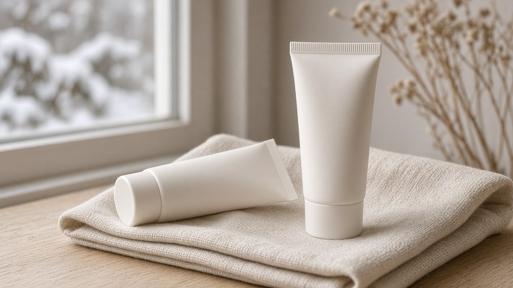

季節・保暖與換季用品
這一類整理冬天常用的換季與保暖用品，依品牌官網規格與查詢日標示對照。護唇膏、護手霜是本類主文；電暖器文的主分類仍是家電・租屋，因保暖主題一併列出。你可以先依需求選入口。

精選比較
季節

季節 · · 比較 4 款
冬天護手霜怎麼挑？先看純素、無添加人工香料等標示：4 款比較
先看官網有沒有標 VEGAN 純素、無添加人工香料、極度乾燥，再對照點名成分；ml 和 g 不能直接比。
NT$125–149
比較 4 款75 ml／100 ml／100 g妮維雅 2＋艾翠斯 1＋雪芙蘭 1
閱讀比較 →
季節

季節 · · 比較 4 款
冬天護唇膏怎麼挑？先看 SPF、成分與容量：4 款比較
先看有沒有寫 SPF、官網點名哪些成分，再對照 4 款護唇膏的容量標示。
NT$109–199
比較 4 款2 款官網寫 SPF15妮維雅 3＋曼秀雷敦 1
閱讀比較 →
以下這篇主分類是家電・租屋，因保暖主題列在本頁。
家電

家電・租屋 · · 比較 5 款
小坪數租屋電暖器怎麼挑？怕跳電先看功率：5 款 2026 冬季比較
小坪數怕跳電，先看瓦數和迴路，再對照 5 款電暖器的品牌官網規格。
NT$1,690–7,580
比較 5 款4 陶瓷＋1 對流550W–1,350W
閱讀比較 →